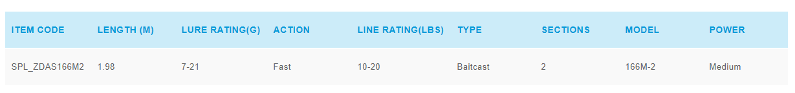
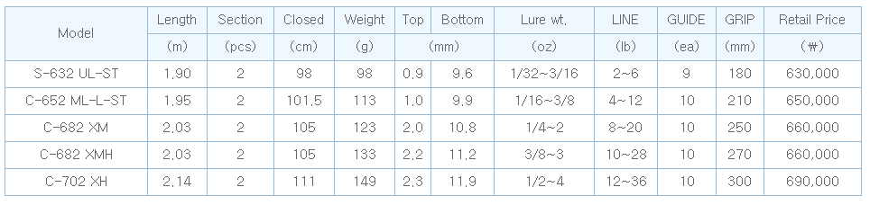

ROD
1.Shimano Jodias 166M
Born from the home of bass fishing, we tested this rod extensively in the competitive bass fishing environment in Japan and USA.
All possible technique of bass fishing is covered in this rod by adding a "High-Power X" finish.
Guides placement and sizes are carefully chosen to maximum useability and to keep the rod weight low.
Shimano's own CI4+ fighting reel seat adds a classy touch to the rod as well as exceptional functionality.

2.NS Eldorado Generation C-682XMH
he strong stiffness, rarely found in major upgraded models of MH(power of rod) for bass anglers, enables even the record-setting catch to be subdued without difficulty.
This model is ideal for the lift-and-pull situations basic for the floor fishing, and provides optimal action for operation of fishing tackle such as rubber jig, Texas rig, free rig, heavy down shot, etc.
This product was designed as a model with a powerful rod blank, providing excellent maneuverability, balance, sensitivity, etc.
